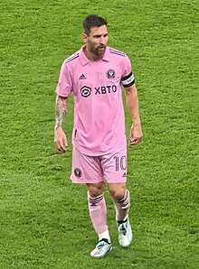

Lionel Andrés Messi Kuchchittini (ispancha: Lionel Andres Messi Cuccittini; 1987-yilda 24-iyunda Argentinada tavallud topgan. Inter Mayami[4] va Argentina milliy futbol jamoasida oʻynaydigan professional futbolchidir. Koʻplab futbol mutaxassislari, jurnalistlar va futbol yulduzlari tomonidan barcha davrlarning eng yaxshi futbolchilaridan biri deb tan olingan. Messi Pekinda oʻtkazilgan 2008-yilgi Yozgi Olimpiada oʻyinlari chempioni, 2005-yilning yoshlar orasida jahon chempioni (turnirning eng yaxshi oʻyinchisi va toʻpurari), 2021-yilgi Copa America turniri gʻolibi hisoblanadi. 2022-yilda jahon chempionatida gʻolib boʻlgach, bir futbolchi oʻz faoliyatida erishishi mumkin boʻlgan barcha sovrinlarga ega chiqdi. 2012-yil bir mavsumda Barselona klubi safida 91 ta gol urib, buzish qiyin boʻlgan rekord oʻrnatdi. Messi yetti marta Oltin toʻp va 6 marta Yevropa oltin butsasi sovrinlarini qoʻlga kiritgan va bu borada rekordchi hisoblanadi. Shuningdek, futbol boʻyicha jahon chempionatlari tarixida eng yaxshi oʻyinchi (FIFA oltin toʻpi) mukofotini 2 marta qoʻlga kiritgan yagona futbolchidir.
Barselona tarkibida jami 35 ta sovrinni qoʻlga kiritgan. Barselona jamoasi bilan oʻn karra Ispaniya chempioni (2004/05, 2005/06, 2008/09, 2009/10, 2010/11, 2012/2013, 2014/2015, 2015/2016, 2017/2018, 2018/2019) boʻlgan, yetti marta Ispaniya kubogi (2008/2009, 2011/2012, 2014/2015, 2015/2016, 2016/2017, 2017/2018, 2020/2021), yetti marta Ispaniya superkubogi (2006, 2009, 2010, 2011, 2013, 2016, 2018) va to'rt marta UEFA Chempionlar ligasi (2005/2006, 2008/2009, 2010/2011, 2014/2015) gʻolibi boʻlgan. Messi yetti marta (2008/2009, 2009/2010, 2010/2011, 2011/2012, 2014/2015, 2019/2020, 2020/2021) Ispaniya chempionatining eng yaxshi oʻyinchisi toʻpurari hisoblanadi 2023-yilda Argentina milliy termajamoasining o‘quv yig‘in mashg‘ulotlar ba‘zasi nomi uning sharafiga nomlandi
Bosh menyu